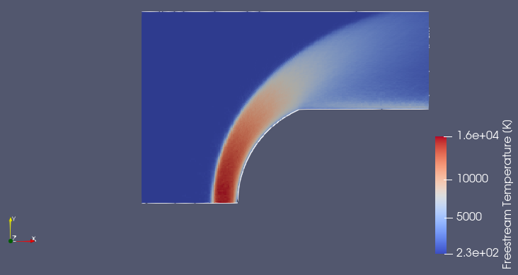
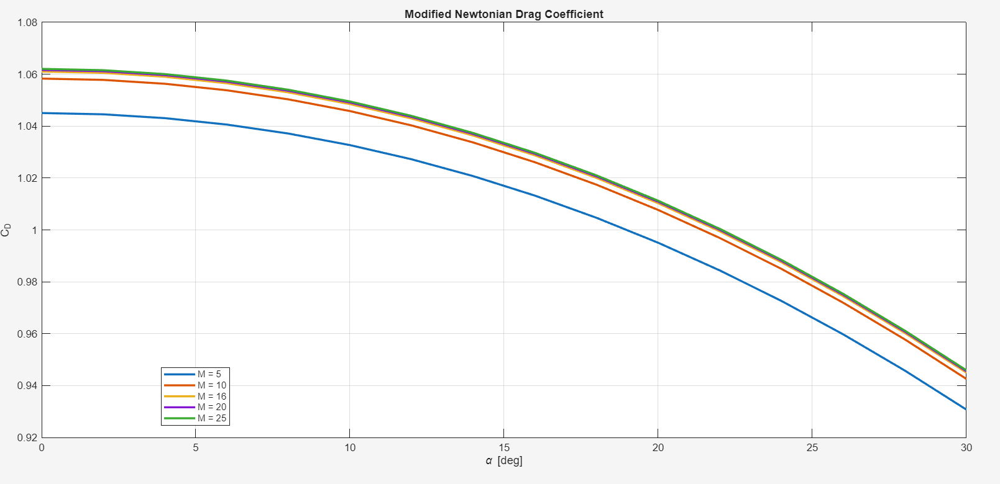
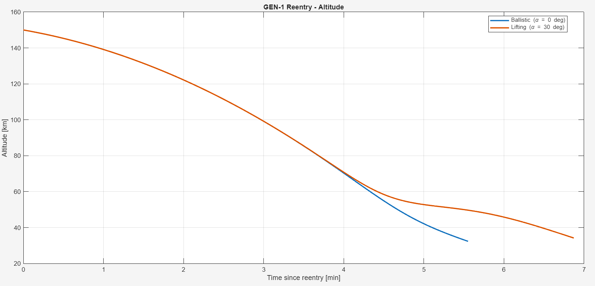
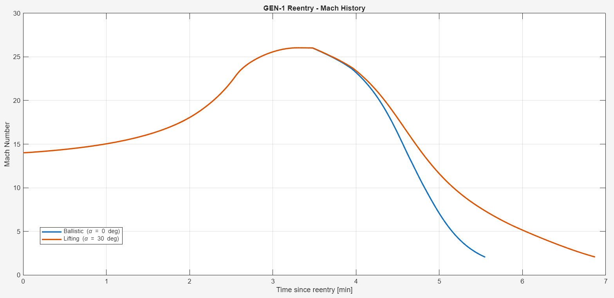
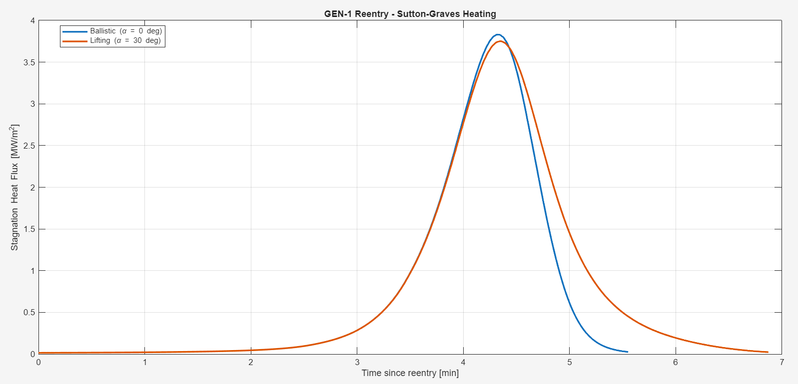
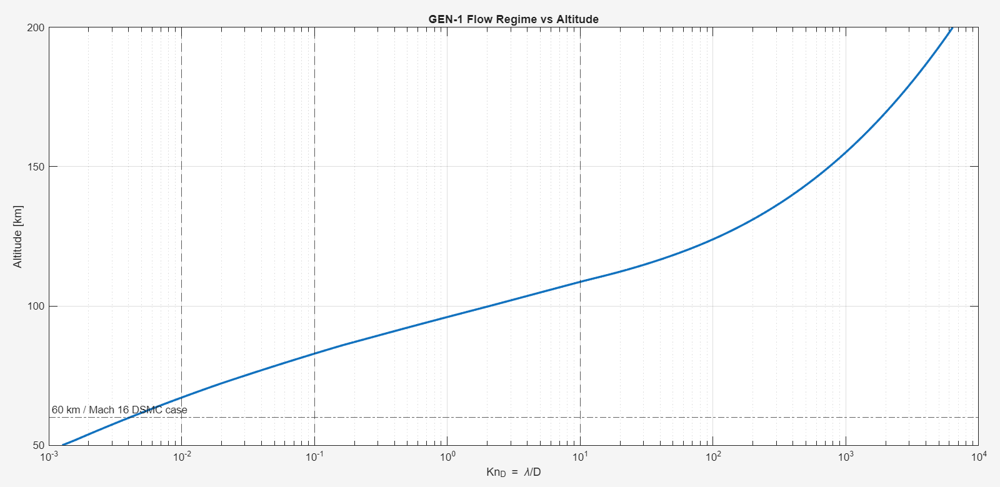
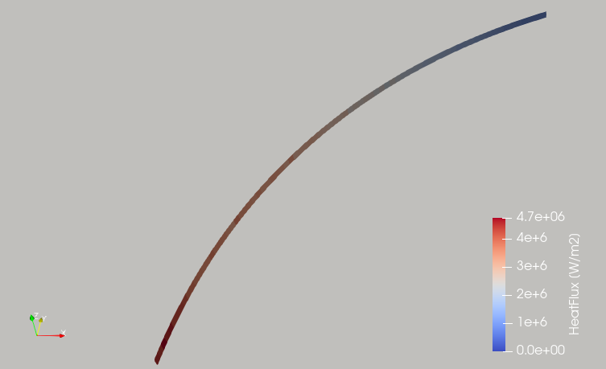

ATMOSPHERIC ENTRY · AEROTHERMODYNAMICS · DSMC
Capsule Aerothermodynamics
Analytical convective stagnation heating and particle-based DSMC investigation of a small hypersonic reentry capsule.

Independent engineering study inspired by the GEN-1 capsule and public reentry material from Genesis Space Flight Laboratories. Reconstructed geometry is approximate; this is not an official Genesis simulation.
Analysis workflow
01 / Aerodynamic database
| Input | Method / output |
|---|---|
| Approximate spherical-cap forebody | 59-mm diameter; inferred 32.1-mm nose radius |
| Mach 2–30; AoA 0°–30° | Modified Newtonian pressure integration |
| Coefficients | CD(M,α), CL(M,α), L/D(M,α) |

02 / Trajectory and analytical heating



| Peak-heating metric | Ballistic · 0° | Lifting · 30° |
|---|---|---|
| Heat flux | 3.83 MW/m² | 3.75 MW/m² |
| Altitude | 60.2 km | 61.5 km |
| Velocity | 6.10 km/s | 6.22 km/s |
| Mach at peak | 19.4 | 19.9 |
03 / Flow-regime assessment

04 / DSMC flow and heating
| Freestream / model | Value |
|---|---|
| Selected DSMC case | 60-km atmospheric conditions from the MATLAB US76 model |
| Atmosphere | ρ = 3.10 × 10⁻⁴ kg/m³ · T = 247 K |
| Gas / collision model | Nonreacting N₂/O₂ · variable hard sphere |
| Solver / geometry | OpenFOAM dsmcFoam · planar extruded forebody |
| Numerics | ~26,400 cells · Δt = 20 ns |
| Wall | Prescribed Tw = 3130 K |

Analytical / DSMC comparison
DSMC result approaches analytical result as transient converges to a steady-state condition.
| 60-km comparison case | Stagnation-region heat flux |
|---|---|
| Sutton–Graves, MATLAB | 3.83 MW/m² |
| Extended DSMC running estimate | 3.21 MW/m² |
| Difference | ~16% error |
Outcome
Connected approximate capsule geometry, aerodynamic modeling, 3DOF entry, analytical heating, flow-regime assessment and particle-based simulation in a multi-fidelity aerothermodynamics workflow.
Public reference: Genesis Space Flight Laboratories DSMC campaign. Independent engineering demonstration.